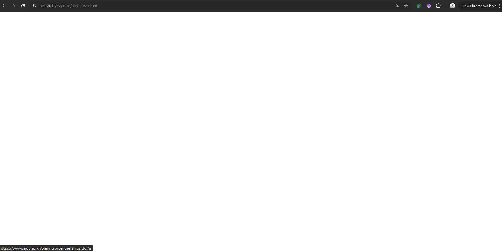
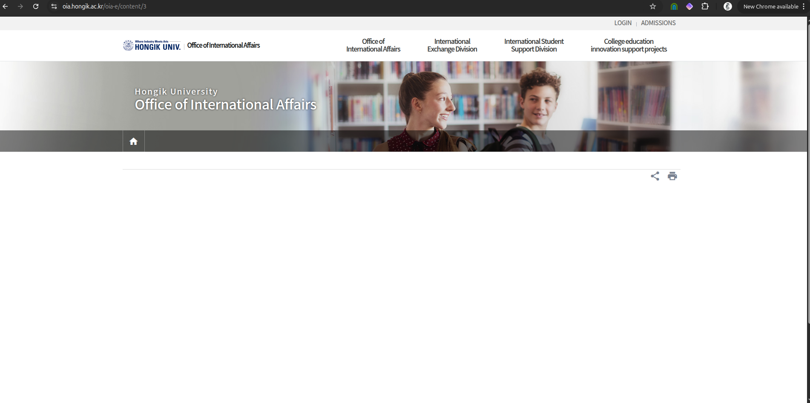

March 9, 2026
On March 8, 2026, Gender Watchdog visited the official partner/cooperation pages of Ajou University and Hongik University — two institutions that Chung-Ang University (CAU) has referenced in the context of academic partnerships.
Both pages were blank or showed no active partnership with CAU as of the date of capture.
This pattern mirrors what was documented at Dongguk University, where the University of Southampton, UBC, and Tsinghua University all denied or could not confirm claimed partnerships. A blank partner page is not definitive proof of a false claim — it may indicate an expired MOU, a recently removed listing, or a partnership held at a different administrative level. However, it is evidence that warrants direct inquiry, and it is being preserved here for that purpose.
The following screenshot was captured on March 8, 2026 from Ajou University's official international cooperation / partner universities listing page. No entry for Chung-Ang University was present.

Ajou University partner page — captured March 8, 2026
The following screenshot was captured on March 8, 2026 from Hongik University's official international cooperation / partner universities listing page. No entry for Chung-Ang University was present.

Hongik University partner page — captured March 8, 2026
At Dongguk University, Gender Watchdog documented three confirmed false partnership claims (University of Southampton, UBC, and inferred Tsinghua involvement). Those claims appeared on Dongguk's official website and in materials submitted for government funding assessments. The BC Office of the Information and Privacy Commissioner had to intervene to obtain a UBC FOI confirmation.
CAU is Korea's 10th largest university by enrollment and a recipient of substantial government research and internationalization funding (BK21, IITP contracts). Partnership claims — and blank partner pages — matter because they may affect:
This post will be updated as Gender Watchdog sends formal inquiries to CAU, Ajou University, and Hongik University regarding the status of any partnership agreements.
All screenshots are preserved in their original form. This post constitutes public interest journalism and investigative documentation under applicable fair use and freedom of expression frameworks.